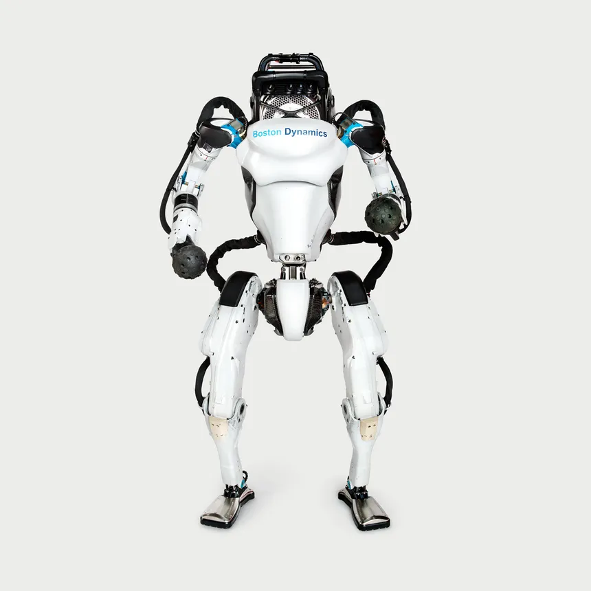
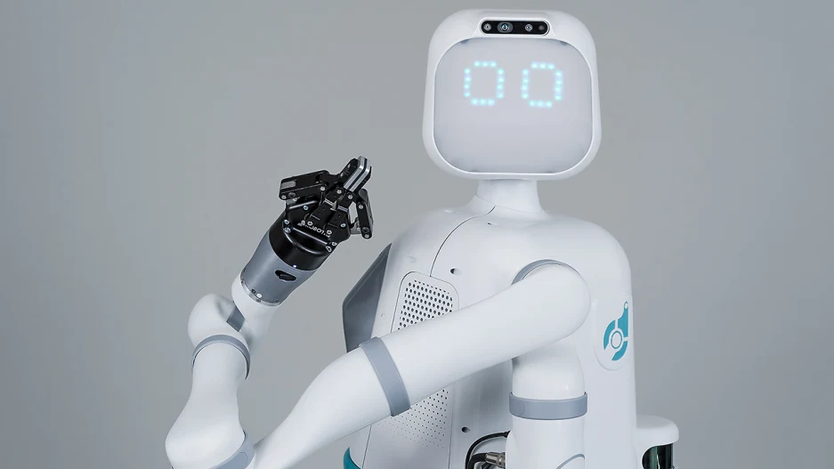
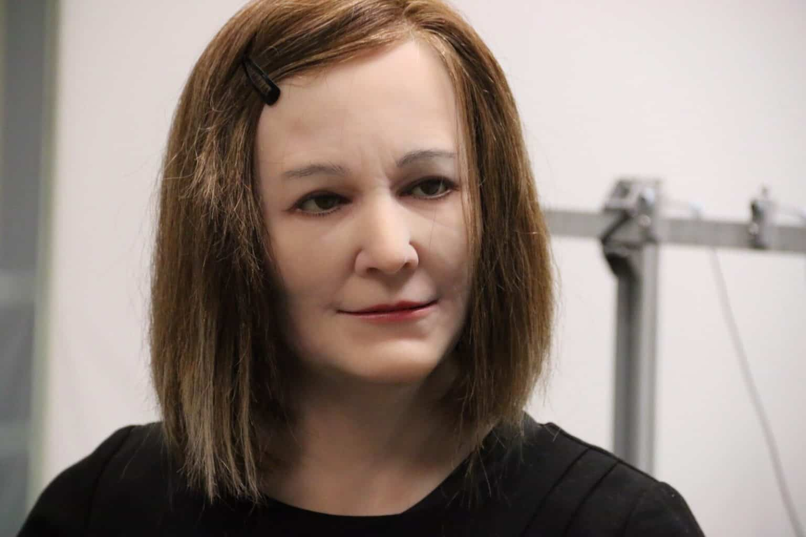

Explorando a Robótica Avançada
A robótica avançada é um campo empolgante que combina diversos conhecimentos, como engenharia, ciência da computação e inteligência artificial, para criar sistemas autônomos capazes de realizar tarefas complexas.
Como Funciona
Os robôs avançados utilizam uma combinação de sensores, atuadores e algoritmos avançados para perceber o ambiente ao seu redor, tomar decisões e executar tarefas específicas de forma autônoma.
Robôs Avançados
Atlas

O Atlas é um robô humanoides desenvolvido pela Boston Dynamics. Ele é capaz de realizar diversas tarefas físicas complexas.
Sophia
Sophia é um robô social desenvolvido pela empresa Hanson Robotics. Ela é conhecida por sua aparência humana realista e capacidade de interagir com humanos.
MOXI

O Robô Moxi foi desenvolvido para auxiliar equipes médicas, realizando pequenas funções que são geralmente exercidas por um profissional de enfermagem. Criado pela empresa Diligent Robotics, robô humano tem a capacidade de trabalhar 24 horas por dia, pausando rapidamente para recarregar as baterias e logo depois retorna ao serviço.
NADINE

O principal objetivo deste robô humano é se tornar uma opção viável de assistente pessoal ou como uma companhia para crianças e idosos no futuro. Não é à toa que sua criadora acredita que dispositivos sociais podem se tornar “C-3POs da vida real”. Mas, enquanto isso não acontece, a Nadine atua como recepcionista da instituição que a criou.